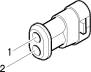

D83 Gearbox i.e/ coupling ( ABS )
- Path
- Electrical equipment > Connectors > D Intermediate couplings > D83 Gearbox i.e/ coupling > D83 Gearbox i.e/ coupling ( ABS )
- Kind
- connector pinout (pin -> wire colour -> other end)
- Applies to
- engines: 2.5 V6, 3.2 V6, 1.9 JTD 8v , 2.4 JTD 10v; all production periods; only with equipment: Q-System
- Interactive page
- https://sloeber94.github.io/elrnDB-a156/en/#/3235875
Applies to: engines: 2.5 V6, 3.2 V6, 1.9 JTD 8v , 2.4 JTD 10v; all production periods; only with equipment: Q-System

Wiring | Colour |
|---|---|
BIANCO (white) |